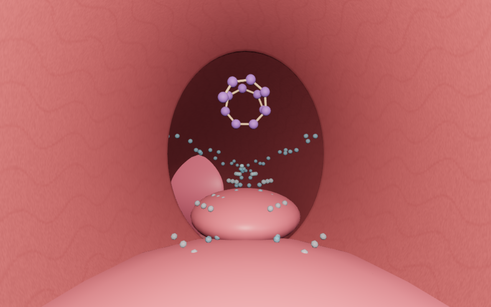
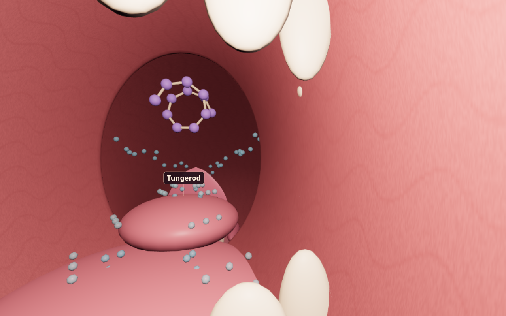

Identisk fast kamerastilling, DPR 1 og renderfaktor 0,8 i hvert par. Samme Chromium/SwiftShader. Klippenes afspilningshastighed er ikke en FPS-måling.
| Visning | FPS (median) | Billedtid, ms | Trekanter | Tegnekald |
|---|
| desktop · mouth | 2.14 → 2.31 | 466.6 → 433.4 | 83,804 → 77,668 | 133 → 125 |
| desktop · epiglottis | 3.33 → 3.16 | 300.0 → 316.7 | 72,960 → 75,056 | 39 → 44 |
| desktop · stomach | 2.50 → 2.31 | 400.0 → 433.3 | 180,535 → 180,533 | 47 → 46 |
| desktop · ascending | 4.28 → 3.75 | 233.4 → 266.7 | 34,408 → 47,976 | 14 → 20 |
| desktop · jejunum | 1.82 → 1.76 | 550.0 → 566.6 | 313,236 → 313,236 | 28 → 28 |
| mobil · mouth | 4.28 → 4.61 | 233.4 → 216.7 | 84,108 → 75,404 | 128 → 108 |
| mobil · epiglottis | 5.45 → 5.00 | 183.4 → 199.9 | 72,768 → 73,200 | 37 → 38 |
| mobil · stomach | 4.29 → 4.00 | 233.3 → 250.0 | 180,535 → 180,533 | 47 → 46 |
| mobil · ascending | 10.00 → 8.57 | 100.0 → 116.7 | 34,408 → 47,976 | 14 → 20 |
| mobil · jejunum | 3.00 → 3.16 | 333.3 → 316.7 | 313,236 → 313,236 | 28 → 28 |
Alle måledata og betingelser

Kontrolbillede med fast referencekamera · before · mouth · desktop
Kontrolbillede med fast referencekamera · after · mouth · desktopKontrolbillede med fast referencekamera · before · epiglottis · desktopKontrolbillede med fast referencekamera · after · epiglottis · desktopKontrolbillede med fast referencekamera · before · stomach · desktopKontrolbillede med fast referencekamera · after · stomach · desktopKontrolbillede med fast referencekamera · before · ascending · desktopKontrolbillede med fast referencekamera · after · ascending · desktopKontrolbillede med fast referencekamera · before · jejunum · desktopKontrolbillede med fast referencekamera · after · jejunum · desktopKontrolbillede med fast referencekamera · before · mouth · mobilKontrolbillede med fast referencekamera · after · mouth · mobilKontrolbillede med fast referencekamera · before · epiglottis · mobilKontrolbillede med fast referencekamera · after · epiglottis · mobilKontrolbillede med fast referencekamera · before · stomach · mobilKontrolbillede med fast referencekamera · after · stomach · mobilKontrolbillede med fast referencekamera · before · ascending · mobilKontrolbillede med fast referencekamera · after · ascending · mobilKontrolbillede med fast referencekamera · before · jejunum · mobilKontrolbillede med fast referencekamera · after · jejunum · mobil